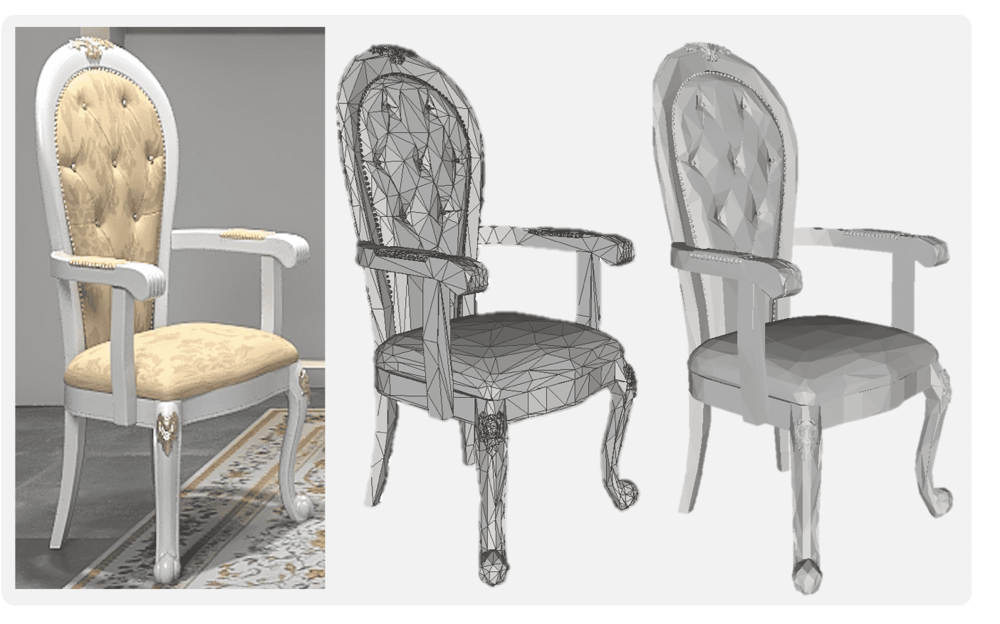
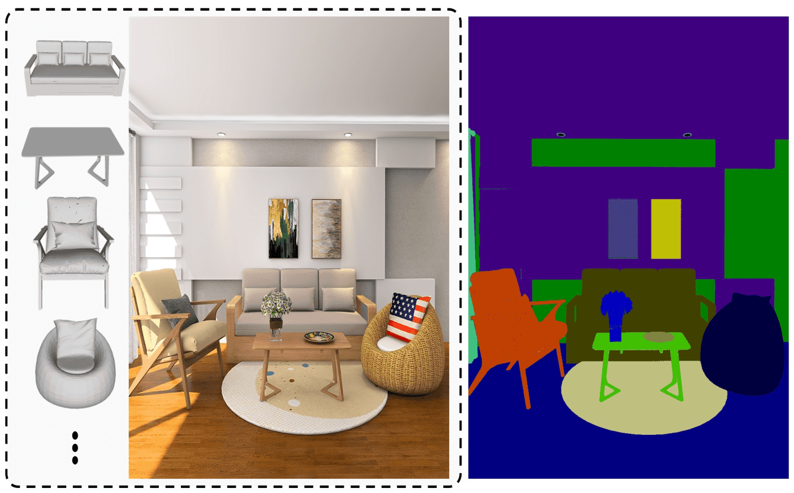
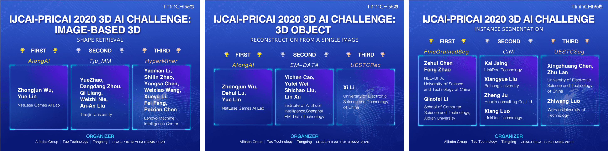

Overview
The vision community has put tremendous efforts into 3D object modeling over the past decade, and has achieved many impressive breakthroughs. However, there is still a large gap between the current state of the art and industrial needs for 3D vision. One of the major reasons is that existing 3D shape benchmarks provide only 3D shapes with dreamlike or no textures. Another imperfection is that there is no large-scale dataset in which 3D models exactly match the objects in images. These are insufficient for comprehensive and subtle research in areas such as texture recovery and transfer, which is required to support industrial production.
The goal of the workshop is to facilitate innovative research on high-quality 3D shape understanding and generation, and to build a bridge between academic research and 3D applications in industry. Towards this goal, we release 3D-FUTURE (3D FUrniture shape with TextURE) which contains 20,240 photo-realistic synthetic images captured in 5,000 diverse scenes, and 9,992 involved unique industrial 3D CAD shapes of furniture with high-resolution informative textures developed by professional designers. Building on 3D-FUTURE, we propose the Alibaba 3D Artificial Intelligence Challenge 2020 with three tracks: 1) Image-based 3D shape retrieval, 2) 3D object reconstruction, and 3) instance segmentation. In addition, a discussion panel is included in the workshop to provide a forum for potential research topics such as recovery of both 3D shape and texture from 2D images.
Competition Tracks
The competition tracks are based on the 3D-FUTURE benchmark, which is provided by Alibaba Topping Homestyler, and organized by Alibaba Tao Technology Department. The competition platform is supported by Alibaba Tianchi.

Cross-domain Image-based 3D Shape Retrieval
In this challenge, participants are required to retrieval the corresponding 3D shape given a 2D query image. We expect to foster the development of shape retrieval methods that are robust to slight occlusions and changes in diverse complicated surroundings. The performance will be mainly measured by TopK Recall. Details can be found here.

3D Object Reconstruction from A Single Image
In this challenge, participants will reconstruct a 3D shape from a single RGB image. The objects contained in the input RGB images may slightly occluded or patrially incompleted. The Chamfer Distance and F-score will be used to measure the quality of the reconstruction. Details can be found here.

Instance Segmentation
In this challenge, participants are required to label each foreground pixel with the appropriate object and instance. We include this challenge because it will motivate vision-based image generation, thereby improving relevant industrial production chains, for example, by partially reducing the requirement for expensive 3D rendering. Details can be found here.
Prizes
1st Place: $1500
2nd Place: $1000
3rd Place: $500
Presentation at our
IJCAI-PRICAI 2020 Workshop
Co-author of our
IJCAI-PRICAI 2020 Workshop report
Leaderboard

Important Dates
2020-12-31 The IJCAI-PRICAI 2020 3D AI Challenge workshop will be held virtually on January 8, 2021 (UTC).
2020-12-14 Release of IJCAI-PRICAI 2020 3D AI Challenge leaderboard.
2020-09-22 Release of report for 3D-FUTURE dataset.
2020-03-30 Release of training and test samples.
2020-04-03 Release of the entire training and validation data.
2020-05-20 Release of evaluation scripts, toolbox, and baseline.
2020-07-19 Registration deadline. Release of test set (23:59:59 PST).
2020-07-24 Submission deadline (23:59:59 PST).
2020-08-07 Technical report deadline.
2020-08-21 Challenge award notification.
Program
How to enter the workshop zoom meeting:
- Login to the virtual chair platform. (https://www.virtualchair.net/events/ijcai-pricai-2020)
- Use the “Calendar” feature on the left side of your screen to locate the workshop room W35 . Click on the Room Name, and a line will appear to guide you.
- When entering the room you will see the message ‘press X to enter zoom call’. This will bring you directly into the zoom meeting
Morning Session (January 8, UTC Time)
| 12:00 am - 00:15 am | Welcome and Introduction | |
| 00:15 am - 01:15 am |
Keynote Talk 1 (Tatsuya Harada).
Understanding 3D Structure from Limited Supervised Information and Tracking Non-Rigid 3D Objects |
|
| 01:15 am - 01:55 am |
Keynote Talk 2 (Jun-Yan Zhu)
3D-aware Image Synthesis and Editing |
|
| 01:55 am - 02:45 am |
Keynote Talk 3 (Rongfei Jia)
Beginning 3D Studies through 3D-FUTURE and 3D-FRONT Benchmarks |
|
| 02:45 am - 03:00 am | Coffee Break. | |
| 03:00 am - 04:00 am |
Contributed talk (1) - 3D Object Reconstruction from A Single Image
|
|
| 04:00 am - 05:00 am |
Contributed talk (2) - Instance segmentation
|
Afternoon Session (January 8, UTC Time)
| 08:00 am - 08:10 am | Introduction | |
| 08:10 am - 09:10 am |
Keynote Talk 1 (Andreas Geiger).
Neural Implicit Representations for 3D Vision |
|
| 09:10 am - 10:10 am |
Keynote Talk 2 (Weiwei Xu)
Data-driven 3D Content Creation |
|
| 10:10 am - 11:10 am |
Keynote Talk 3 (Chaohui Wang)
Occlusion Boundary & Pixel-Pair Occlusion Relationship Map |
|
| 11:10 am - 11:25 am | Coffee Break. | |
| 11:25 am - 12:25 pm |
Contributed talk (3) - Cross-domain Image-based 3D Shape Retrieval
|
Industry Talk
| Binqiang Zhao | Multimedia Understanding and Recommendation for Better User Experiences and Production incentives |
Invited speaker
Andreas Geiger is professor at the University of Tübingen and group leader at the Max Planck Institute for Intelligent Systems. Prior to this, he was a visiting professor at ETH Zürich and a research scientist at MPI-IS. He studied at KIT, EPFL and MIT and received his PhD degree in 2013 from the KIT. His research interests are at the intersection of 3D reconstruction, motion estimation, scene understanding and sensory-motor control. He maintains the KITTI vision benchmark.
Tatsuya Harada is a Professor in the Research Center for Advanced Science and Technology at the University of Tokyo. His research interests center on visual recognition, machine learning, and intelligent robot. He received his Ph.D. from the University of Tokyo in 2001. He is also a team leader at RIKEN AIP and a vice director of Research Center for Medical Bigdata at National Institute of Informatics, Japan.
Jun-Yan Zhu is an Assistant Professor with The Robotics Institute in the School of Computer Science of Carnegie Mellon University. He also holds affiliated faculty appointments in the Computer Science Department and Machine Learning Department. Prior to joining CMU, he was a Research Scientist at Adobe Research and a postdoctoral researcher at MIT CSAIL. He obtained his Ph.D. from UC Berkeley and his B.E. from Tsinghua University. He studies computer vision, computer graphics, computational photography, and machine learning. He is the recipient of the Facebook Fellowship, ACM SIGGRAPH Outstanding Doctoral Dissertation Award, and UC Berkeley EECS David J. Sakrison Memorial Prize for outstanding doctoral research. His co-authored work has received the NVIDIA Pioneer Research Award, SIGGRAPH 2019 Real-time Live! Best of Show Award and Audience Choice Award, and The 100 Greatest Innovations of 2019 by Popular Science.
Rongfei Jia is a Staff Algorithm Expert at Tao Technology Department, Alibaba Group. He received his PhD degree from Beihang University. He is leading an algorithm team which is devoted in 3D AI algorithms and AR technologies to make it easier for online retail, especially for household furniture. His research interests include 3D object modeling, furniture scene understanding & synthesis, and recommender systems.
Weiwei Xu is currently a researcher at state key lab of CAD&CG in Zhejiang university. Before that, he was a Qianjiang Professor at Hangzhou Normal University and a researcher in Internet Graphics Group at Microsoft Research Asia from 2005 to 2012, and he was a post-doc researcher at Ritsmeikan university in Japan for more than one year. He received Ph.D. Degree in Computer Graphics from Zhejiang University, Hangzhou, and B.S. Degree and Master Degree in Computer Science from Hohai University in 1996 and 1999 respectively. He has published more than 80 papers on peer-review conference and journal papers, including around 30 papers on top-tier journals and conferences, such as ACM Transactions on Graphics, IEEE TVCG, CVPR and AAAI. He won the NSFC outstanding young research award on 2013, and second prize for natural sciences at Zhejiang province.
Chaohui Wang is Maître de Conférences (Associate Professor) at Université Paris-Est, Marne-la-Vallée, permanent researcher at LIGM Laboratory (UMR 8049), Université Gustave Eiffel, CNRS, ESIEE Paris, Ecole des Ponts, France. He received his PhD degree in Applied Mathematics at École Centrale Paris, France, under the supervision of Prof. Nikos Paragios. After that, he was postdoctoral researcher, working with Prof. Stefano Soatto at University of California, Los Angeles, USA, and then with Prof. Michael J. Black at Max Planck Institute for Intelligent Systems, Germany. He is a Senior Member of the IEEE. His research interests include computer vision, machine learning, and related problems.